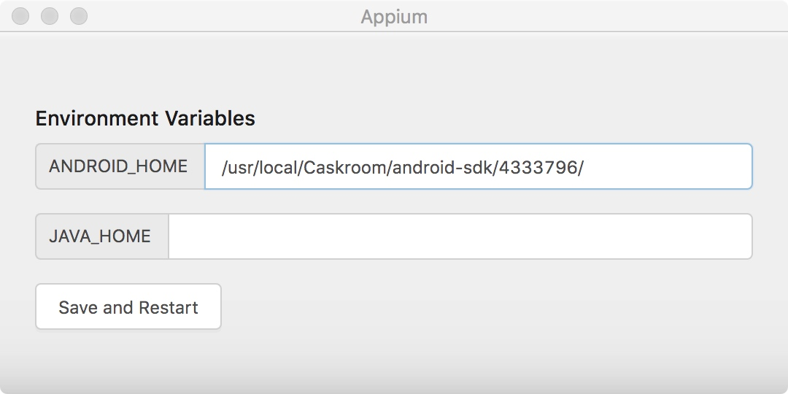

测试了一下使用 Python 操作 Telegram。记录一下大致过程供备忘。
0x01 安装 Genymotion与VirtualBox
Genymotion是一款非常好用的安卓模拟器，网络上有很多的安装教程，这里不再赘述。
这里要注意：需要使用安卓6.0以下的安卓虚拟机。原因是安卓6.0引入了运行时权限管理，使我们的自动化任务变得复杂很多，而且涉及到一些 Root 权限的问题。故推荐使用安卓5.0版本的虚拟机。
0x02 安装安卓 SDK
在MacOS 下，使用命令brew cask install android-sdk 进行安装。
然后使用 brew cask install homebrew/cask-versions/java8安装 Java8。
使用 brew cask info android-sdk 查看安卓 SDK 的 path。
上述步骤完成之后，启动 Genymotion 虚拟机，运行adb devices应该可以看到运行中的虚拟机。
☁ ~ adb devices
List of devices attached
192.168.56.101:5555 device
0x03 安装 & 配置Appium
前往 https://github.com/appium/appium-desktop/releases/latest 下载最新版本的 Appium。
点击 Appium，在 ANDROID_HOME 一行中填入安卓 SDK 的 path。JAVA_HOME 实测不用管。

0x04 运行我们的 Python代码
这里选择的号池是 fxhyd.cn。有很多的号池可以选择，不需要局限在这一个。
import re
import time
import requests
from appium import webdriver
TOKEN = ''
def get_number():
"""
从号池中获取号码
"""
req = requests.get(
"http://api.fxhyd.cn/UserInterface.aspx?action=getmobile&token=%s&itemid=3988&excludeno=170.171.150" % TOKEN)
if 'success' in req.text:
return req.text.split("|")[-1]
def get_message(phone_number):
"""
获取短信验证码
"""
while True:
req = requests.get(
"http://api.fxhyd.cn/UserInterface.aspx?action=getsms&token=%s&itemid=3988&mobile=%s&release=1" % (
TOKEN, phone_number))
if "success" not in req.text:
print(req.text) # 30001
else:
return re.findall("\\d+", req.text)[0]
time.sleep(10)
def release_number(phone_number):
req = requests.get(
"http://api.fxhyd.cn/UserInterface.aspx?action=release&token=%s&itemid=3988&mobile=%s," % (TOKEN, phone_number))
print(req.text)
def main():
desired_caps = {}
desired_caps['platformName'] = 'Android'
desired_caps['platformVersion'] = '5.0'
desired_caps['deviceName'] = 'Android Emulator'
desired_caps['appPackage'] = 'org.telegram.messenger'
desired_caps['appActivity'] = 'org.telegram.ui.LaunchActivity'
desired_caps['newCommandTimeout'] = 2000000 # Appium默认的超时是60s: 在60s 内没有接到指令的话会重启应用，这里加大这个值
driver = webdriver.Remote('http://localhost:4723/wd/hub', desired_caps)
driver.find_elements_by_class_name("android.widget.TextView")[-1].click()
try:
print(driver.page_source)
country_num, phone_number = driver.find_elements_by_class_name("android.widget.EditText")
for i in range(10):
driver.keyevent(67)
number = get_number()
print("get number %s" % number)
phone_number.send_keys("86%s" % number)
driver.find_elements_by_class_name("android.widget.FrameLayout")[5].click() # 对勾勾上
message = get_message(number)
driver.find_elements_by_class_name("android.widget.EditText")[0].send_keys(message) # 输入验证码
driver.find_elements_by_class_name("android.widget.EditText")[0].send_keys(number) # 登录界面
# print(release_number(number))
driver.find_elements_by_class_name("android.widget.FrameLayout")[5].click() # 对勾勾上
except Exception as e:
print(e)
time.sleep(10)
driver.quit()
def test_get_release():
number = get_number()
print(number)
release_number(number)
if __name__ == '__main__':
main()